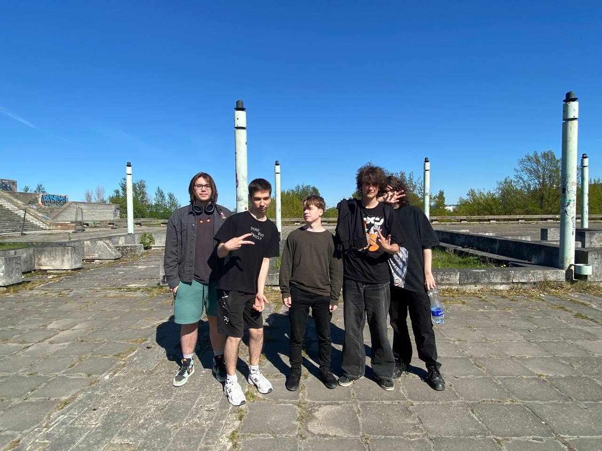
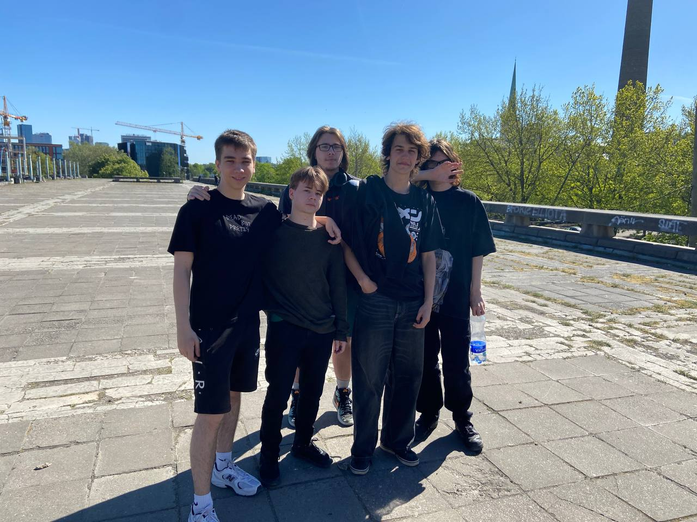

Teave minu kohta
- Minu nimi on Artur Šuškevitš
- Minu eriala on noorem tarkvaraarendaja
- Ma oskan väga hästi vene keelt - see on minu emakeel, samuti räägin veidi inglise ja eesti keelt.
- Minu IT teadmised:
- Programmeerimiskeeled: Koolitus sellistes populaarsetes programmeerimiskeeltes nagu Java, Python ja C#.
- Veebiarendus: HTMLi, CSSi ja JavaScripti alused ning sellised raamistikud nagu React või Angular.
- Andmebaaside haldamine: SQL-i mõistmine ja töö selliste andmebaasidega nagu MySQL ja PostgreSQL.
- Tarkvaraarenduse metoodikad: Sissejuhatus Agile ja Scrum metoodikatesse.
- Versioonikontroll: Git ja GitHubi kasutamine versioonikontrolliks ja ühiseks kodeerimiseks.
- Projektitöö: Reaalsed projektid, mis pakuvad praktilisi kogemusi ja praktilisi probleemide lahendamise oskusi.
- Nüüd ma saan luua:
- Web Development Projects
- Mobile Applications
- Desktop Applications
- Game Development
- Data-driven Projects
- Automation and Tools
- Collaboration and Open Source
- Minu parim projekt on mäng "Granny Filthy black"
- MVP-põhimõtte kasutamine teie IT-projektides võib olla väga kasulik. Esiteks võimaldab see teil kiiresti turule tuua funktsionaalse toote, mis aitab teil oma ideed reaalsete kasutajatega valideerida ilma suurte algsete investeeringuteta. Keskendudes olulistele funktsioonidele, saate säästa arenduskulusid ja aega, tagades, et teie toode vastab kasutajate vajadustele, enne kui pühendute täiemahulisele arendusele. Teiseks, kasutajate tagasiside varajane kogumine aitab teil teha teadlikke otsuseid selle kohta, milliseid funktsioone eelistada ja täiustada, vähendades ebaõnnestumise riski, kuna toode viiakse vastavusse turu nõudmistega. Lõpuks võimaldab MVP väljatöötamise iteratiivne iseloom pidevat täiustamist ja kohandamist tegelike kasutajakogemuste põhjal, tagades, et teie toode areneb tõhusalt koos kasutajate vajaduste ja turusuundumustega.
- Minu koos sõbraga:

